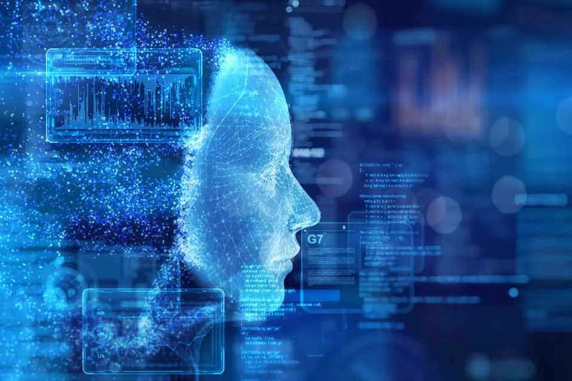

Изкуственият интелект (ИИ) е модерна дума от десетилетия, но едва наскоро започнахме да схващаме пълния и потенциал. От прости алгоритми за машинно обучение до сложни невронни мрежи, ИИ бързо се развива, оформяйки начина, по който живеем, работим и взаимодействаме със света около нас.
Докато гледаме към бъдещето, няколко нововъзникващи тенденции в ИИ са особено забележителни. Напредъкът в машинното обучение прави ИИ по-ефективен и интелигентен, проправяйки пътя за нови приложения. Освен това интегрирането на AI в ежедневието става все по-безпроблемно, като интелигентните технологии стават все по-разпространени.
Потенциалната заплаха, която представлява изкуственият интелект (ИИ), е сложен и деликатен въпрос, който зависи от различни фактори, включително намеренията, които стоят зад разработването му, степента му на самостоятелност и съществуващите предпазни мерки за гарантиране на отговорното му използване. Въпреки че ИИ предлага огромни ползи, като например подобрена ефективност, усъвършенстване на процеса на вземане на решения и иновативно решаване на проблеми, съществуват опасения относно потенциалните му отрицателни въздействия. Тези опасения варират от изместване на работни места поради автоматизация до етични проблеми, свързани с вземането на решения с помощта на ИИ, нарушаване на неприкосновеността на личния живот и възможност за непредвидени последици или злоупотреба. Все пак активните мерки, включващи строги регулации, етични насоки и непрекъснати изследвания в областта на безопасността на ИИ, могат да намалят тези рискове и да увеличат положителния потенциал на технологията на ИИ в полза на човечеството. От решаващо значение е да се подходи към разработването на ИИ с внимателно обмисляне на последиците от него и да се даде приоритет на етичните принципи, за да се гарантира, че ИИ остава сила в полза на доброто.
Погледнат през призмата на поверителността чрез проектиране, изкуственият интелект не се различава от другите технологии, тъй като поверителността не е била приоритет при създаването на AI технология. За разлика от риска, създаден от нарушенията на сигурността на данните, обработката на лични данни от AI носи значителен риск за правата и свободите на хората, като същевременно носи много малко „последствия“ за участващите фирми. AI създава няколко проблема с поверителността, като например:
Придобитите данни също пораждат опасения за поверителността на AI и бъдещето на работата, като например свободно даване на информирано разрешение, възможност за отказ, ограничаване на събирането на данни, очертаване на целта на обработката на AI и дори възможността данните да бъдат изтрити при поискване. Но как лицата, чиито данни са били събрани, потенциално поради ефект на разпространение, дори биха били наясно, че тяхната информация е била взета, за да се свържат с компании относно техните данни или да поискат изтриването им?
През следващото десетилетие изкуственият интелект (ИИ) ще претърпи забележителен напредък, като се интегрира безпроблемно в различни аспекти на ежедневието. Системите на ИИ вероятно ще станат по-сложни, използвайки техники за дълбоко обучение, обработка на естествен език и усилено обучение, за да разбират и взаимодействат с хората все по-интуитивно. Тази еволюция ще се прояви в персонализирани виртуални асистенти, способни да предвиждат нуждите на потребителите, самоуправляващи се превозни средства, които се придвижват в сложна градска среда с невиждана досега безопасност, и задвижвано от ИИ здравеопазване, което революционизира диагностиката и плановете за лечение. Етичните аспекти, свързани с ИИ, също ще придобият значимост, като ще се обърне по-голямо внимание на прозрачността, отчетността и намаляването на пристрастията. Тъй като ИИ става все по-разпространен, сътрудничеството между хората и машините ще преосмисли индустриите, като увеличи човешките способности и насърчи иновациите в области от образованието до финансите, като в крайна сметка оформи бъдеще, в което ИИ служи като мощен инструмент за положителна обществена промяна.
Влиянието на изкуствения интелект (ИИ) върху заетостта е тема на непрекъснати дебати и проучвания. Въпреки че ИИ има потенциала да автоматизира определени дейности и длъжности, което води до изместване на работни места в някои сектори, той също така създава възможности за нови видове заетост и повишава производителността и ефективността в много сектори. Технологиите на ИИ могат да рационализират работните процеси, да подобрят процесите на вземане на решения и да увеличат човешките способности, което води до създаване на работни места в области като анализ на данни, разработване на софтуер и поддръжка на системи с ИИ. Съществуват обаче опасения относно потенциала на ИИ да наруши традиционните роли, особено тези, които включват рутинни, повтарящи се задачи, податливи на автоматизация. За да се справят с тези предизвикателства, хората и организациите трябва да се адаптират, като придобият нови умения, възприемат ученето през целия живот и си сътрудничат със системите на ИИ, за да използват техния потенциал, като същевременно намалят изместването на работни места. Освен това създателите на политики, преподавателите и лидерите в индустрията играят решаваща роля за улесняване на плавния преход към икономика, управлявана от ИИ, чрез прилагане на политики и инициативи, които подпомагат преквалификацията на работната ръка, насърчават създаването на работни места и осигуряват равен достъп до възможности в дигиталната епоха.
Бъдещето на изкуствения интелект (ИИ) обещава множество революционни технологии, които ще оформят различни аспекти на обществото. Една от ключовите области на развитие е в сферата на усиленото учене, където системите на ИИ се учат чрез проби и грешки да постигат конкретни цели, което позволява напредък в самостоятелните системи, като например самоуправляващите се автомобили и роботика. Освен това се очаква генериращите съпернически мрежи (Generative adversarial network) да доведат до пробив в творческите области, като позволят на ИИ да генерира реалистични изображения, видеоклипове и дори музика. Обработката на естествен език (Natural language processing) ще продължи да се развива, като системите с ИИ ще станат по-умели в разбирането и генерирането на текст, подобен на човешкия, което ще доведе до подобрения във виртуалните асистенти, езиковия превод и създаването на съдържание. Квантовите изчислителни технологии обещават да решават сложни задачи на ИИ значително по-бързо, което ще доведе до революция в области като откриването на лекарства, криптографията и оптимизация.
В заключение, изкуственият интелект (ИИ) представлява важен преход в начина, по който взаимодействаме с технологията и влияе на нашето бъдеще. Той обещава не само технологични иновации и преобразуване на различни сфери на живота, но и предизвиква етични и социални въпроси, които изискват внимателно обмисляне. Важно е да се отбележи, че потенциалът на ИИ за положително влияние зависи от регулации, които управляват неговото развитие и използване, както и от съзнателните усилия за намаляне на отрицателните въздействия, като загуба на работни места и нарушения на поверителността. С прилагането на етични стандарти и устойчиви политики, ИИ може да се превърне в мощен инструмент за решаване на сложни проблеми, повишаване на качеството на живот и насърчаване на социалното и икономическото развитие. В крайна сметка, нашата способност да се адаптираме и да използваме ИИ по отговорен и конструктивен начин ще определи как той ще промени света през следващите години.